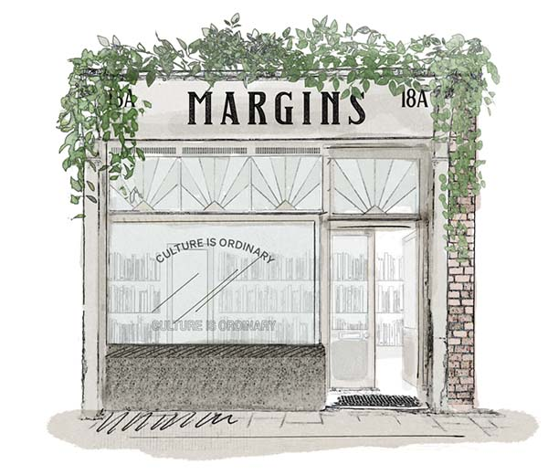

South Norwood
Visual Arts Library
Proposal
April 16th, 2023
Chris Droom

A visual arts library in the heart of South Norwood
I would love to create a library space for the community focussed on visual culture, which compliments the important contributions of Stanley Arts to the area. I envision this to be a welcoming, contemplative space for everyone—across income brackets, generations, and backgrounds—to be inspired, feel a sense of place, and to be in community. I’d love to draw on the support and knowledge of Stanley Arts and local heritage groups to bring this dream to life.
Core functions
Visual arts library
Typographic histories
Teaching space
Gallery space
Meeting space
Design studio
Understanding the terrain
Libraries
South Norwood is home to our much-adored Brutalist library on Lawrence Road, saved in 2021 by local campaigning. Due to brutal cuts, it is now only open two days a week, and long-term underfunding means the range of books has stayed quite similar to when I was a child. Further afield, Croydon Central Library remains fantastic, but is a bus-ride away and its underfunding is also clear.
Arts and Culture
When the council did some research to see what kind of shops people wanted in the area, they knew exactly what they didn’t want: food shops, hairdressers, vape shops. People specifically said that they wanted art and culture.Elizabeth James, speaking to East London Lines, 2019
Elizabeth James Art Gallery opened in 2017 but is sadly no longer in operation. Despite this being sourced from research conducted pre-pandemic, the makeup of the high street(s) remains similar. Amina Malik Gallery ran as a gallery space but repositioned as a perfume retailer in 2021. Amina’s lettering can still be seen adorning the walls of the venue. I will try to get in touch with both Elizabeth and Amina, as they’ll both have lots of insights for me to build upon.

Stanley Arts is the performance arts and events hub in South Norwood, with a strong focus on platforming under-represented voices and engaging the community. The Visual Arts Library Space is intended to expand the offer to the community with an emphasis on design and visual arts. Whilst the library would be able to host design mentoring and smaller workshops, I would love the collaboration to mean larger workshops can be held within their space, and advertised as part of their programme.
Socco Cheta is a long-running youth club that that also has a wonderful history. As I learned in a recent walking tour, it was once the site of a historic picture house and still featured a screening room, in addition to the cafe and garden space. It would be great to be able to hold screenings of an arts appreciation nature here.
Everything I hope to achieve will be in collaboration with and in dialogue with the existing community. I hope this library could provide a role in building awareness of existing groups, projects, and events—signposting and creating promotional material where necessary.
Theory of Change
A good educational system should have three purposes: it should provide all who want to learn with access to available resources at any time in their lives; empower all who want to share what they know to find those who want to learn it from them; and, finally, furnish all who want to present an issue to the public with the opportunity to make their challenge known.bell hooks, Teaching To Transgress: Education As the Practice of Freedom
Art and design has had such a positive impact on my life, raising my horizons from a very young age. With the support, encouragement, and guidance of many art teachers (in particular, those at Croydon School of Art), I was able to enter the digital design profession, in which I have been practising for 16+ years. I would like to make accessible the things I have learned to those outside formal art education, with learning pathways into formal study and/or mentoring to enter the industry, should they wish to pursue it. For this, it will be important to create an environment in which learning can take place.
In life, it’s hard to be what you can’t see.Michelle Obama, Attorney and First Lady 2009–2017
South Norwood is a deprived area with compound disadvantages. There is a very strong class current running through many art and design disciplines and a key goal will be to reach, inspire and elevate those who may share similar experiences of growing up in poverty, or in migrant communities. I would not seek to replicate exclusionary practices, be they social or material.
South Norwood has a young and diverse population. It also has a relatively high unemployment rate, and a relatively high rate of working age residents claiming out-of-work benefits.South Norwood Community Plan, Dec 8 2018
In 2020, I co-created Islington Council‘s digital upskilling programme—a response to job losses and precarity due to the pandemic. For this, I provided remote 1-2-1 guidance on personal or business projects, and compiled learning materials. This made me aware how much interest there is in art and design guidance from those outside of the industry.
We had lots of great feedback from the learners and I found the whole experience incredibly rewarding.
Learning Environments
Reference Library
Art and design books are often prohibitively expensive, meaning access to them may only happen within formal design education or when already in the industry. The reference library will first be populated by books I own, and ones I can source from my networks. For books I don’t have but deem to be a good addition, I’ll write to each publisher, being specific about why it would benefit patrons.
To make the library more accessible, and to aid research, an index of books the library has will be made available online, annotated with excerpts. A QR code within the library window will point to this. In phase two of the project, I would like to introduce a borrowing system.
Tooling
Specialist design tooling accessible to anyone in the area. Practicing designers often delay purchasing non-essential equipment, and many of these would work well as shared resources for the community.

Learning tracks
You can only become truly accomplished at something you love. Don’t make money your goal. Instead pursue the things you love doing, and do them so well, that people can’t take their eyes off of you.Maya Angelou
As mentioned above, routes into the industry will be a strong consideration, but it will hopefully be an outgrowth of developing a creative practice. I will see my role a mainly to inspire and build confidence to the point where visitors will pursue their own learning journeys. For this, I'll provide learning materials and guided pathways into the visual arts. (My focus will be on Graphic Design, and I’ll work with others in the area who specialise in other industries.)
Building on learning from Islington Council's upskilling programme, I'll hold monthly surgeries / drop-ins / 1–2–1 mentoring to help move projects along, or explore next steps in developing careers.
- Design principles
- Layout theory
- Typography + Lettering.
- Brand / Identity design
- Concepting
- Colour theory
- Design history
- Workflow
- Project phases
- Organisation / Workflow
- Backing up work
- Running 'Discovery' sessions
- Brand Presentations
- Delivering assets + guidelines
- Working with clients
- Iterating on ideas
- Tooling
- Figma
- Adobe Creative Suite
- HTML/CSS Foundations
“Experiments in imagining otherwise”
Create a space where ideas can be explored with workshops and screenings. As I continue to build an index of workshop facilitators, I would love to draw upon the knowledge and skills of Turf Projects. The themes of which will be guided by surveying residents, and will emerge from mentoring and conversations with library visitors. As a first-pass, I would like to include these:
Desired location
… a largely intact former Kennedys Sausage Shop at 18 High Street provides a focal point for local organisations’ celebration of the area’s heritage.— South Norwood Community Plan, Dec 8 2018
18A is situated right by a popular, unsheltered bus stop. Commuters would be able to browse and get inspired whilst they wait for their carriage to arrive.
There is a lot of warmth for this building on community groups, and it would be fantastic to have this restored as a space in which everyone is welcome. I love the poetry of this once being a staple of working-class communities, now in service to local working-class people.

Kennedys lots are dotted around South London. The restored branch I’m most familiar with is Crystal Eye Centre, an opticians situated on Crystal Palace’s ‘triangle’ and is the best example of a repaired branch I am aware of. They’ve done a fantastic job of restoring details alongside adding necessary functionality.
Furnishings for 18A
Only a few large items will be needed to run the space. Throughout, I would defer to expertise of groups with knowledge of preserving and maintaining heritage buildings to keep the integrity of the building intact.

Surfacing typographic histories
I have an abiding love for typography and I’ve documented signage, shopfronts, and wayfinding wherever I’ve lived since my early twenties. South Norwood (and Croydon in general) has such a rich typographic history, and I’d love to surface this, making it available both online, and printed to be displayed in the library.
There are several groups dedicated to surfacing histories of the area, and concentrating on design history (its scope to be determined) will be this library’s contribution. I hope for this to help raise the esteem of South Norwood within design communities and help residents feel part of a great tradition.

Gallery + meeting space
The gallery space could serve to display outputs from workshops, feature work from Stanley Arts Life Drawing, or house a local artist of the month. This could be a place for artists to meet each other and develop their craft, and take the step of displaying their own work.
South Norwood has many active community groups. A kettle and teas would be enough to facilitate community meetings for smallish groups. Good working relationships with Socco Cheta and Stanley Arts would mean I could signpost to other community spaces for larger meetings.
- Local groups
- Boundless Theatre
- Clocktower Market
- Focus SE25
- Friends of Love Lane Green
- Norwood Junk Action
- People for Portland Road
- Screen25
- South London Comic and Zine Fair
- South Norwood Action Group
- South Norwood Business Neighbourhood
- South Norwood Business Network
- South Norwood Community Kitchen
- South Norwood Net
- South Norwood Tourist Board
- Stanley Life Drawing
- The Norwood Society
- We Love SE25
Design studio
Within the space will sit a small design practice, under which I will be able to take care of client work whilst managing the space throughout the week.
Improving neighbourhoods is a cause close to my heart and when I began litter-picking in the area in 2021, I noticed more closely the design of the built environment (signage, nameplates, shopfronts, A-boards, etc.). A sizeable amount of the commercial visual communication in South Norwood could be improved, and I’ve been auditing them alongside building an index of businesses on the high streets.
As well as working for cultural and impact groups, I would love to bring my experience working in the industry to improving the visual culture of our high streets. I would work with local businesses on brand development, having some concept work ready when approaching each owner and making the studio's services visible to them.
- Art direction
- Brand development
- Brand creation
- Brand design
- Environments
- Shopfronts
- Signage
- Forecourt / A-Board Signs
- Placemaking
- Wayfinding
- Promotional material
- Publications
- Flyers
- Namecards
- Integrated campaigns

[South Norwood] shares the characteristics of many inner London fringe neighbourhoods which have already experienced an influx of affluent new communities ... South Norwood is on the cusp of further change and there is a real risk that this transformation may erode the unique existing social and economic fabric of the area.South Norwood Community Plan by We Love SE25
Building on co-operative experience, I would work alongside existing practitioners to build a ‘community of practice’, to encourage and support one another in developing craft, and to join forces where appropriate to take on larger projects.
The London Sign Company on Portland Rd. produces a large proportion of shop signage in the area, and C.G. Print are a family-run print shop that have been operating in the area since 1959. I intend to build working relationships with complementary small businesses like these across skillsets and resources not present in the studio.
In addition to this, I’d seek to get to know local action groups to co-create guidelines and materials of a professional standard, to support them to achieve their goals with more effective visual communication.
About me
I was born in 1983 at Mayday Hospital and raised in South Norwood, spending most of my life here, and returning in 2020. I think everyone’s worlds got smaller during the pandemic and walking the same streets I grew up in made me reflect on what community means to me. My vision for South Norwood is of a high street people are proud of, feel part of, and take care of. A beautiful, urban market-town. I am biased, but there’s no place else like South Norwood.
Testimonials
I was always curious about Photoshop but I never had the chance to learn how to use it. Moreover, I didn’t think it was possible to learn it online! Chris has been a really good tutor for my learning: clear, patient, expert! Among other online courses experienced during the pandemic, I have to say that this was the only one with a value not only for my creative enjoyment but also for my job profile.Manuela T., Islington Council Digital Upksilling course participant
I worked with Chris on content and site redesign projects at Shelter. Chris always showed great leadership and project management skills accompanied by a continued personable touch and human empathy—a joy to work with! Chris is an incredibly resourceful and knowledgeable professional from whom I was able to learn a lot about UX design and accessibility requirements, as he is happy to always share his knowledge.Anna Socci, Digital Content Designer, Shelter UK
Read more about my work history on LinkedIn.
Your feedback
If you have any thoughts or suggestions on this proposal, please reach out to me via email chrisdroom@gmail.com or via Twitter [@chris_droom].
Next steps
- Seek council from Stanley Arts to secure a space and funding for first year
- Survey residents' interest and/or direction (via Nextdoor, Instagram, Twitter) to build a co-created vision of a visual arts space.
- Create a steering group, made up of local teachers, practitioners, youth workers, and advisors
- Seek council from South Norwood Business Network to develop a business plan for the design studio
- Continue getting to know local groups and shopkeepers
- Enquire about / create policies for safeguarding if working with young people
References
- Centerprise: the radical past of a much missed Hackney institution
- Introduction to collective liberation, People & Planet
- Experiments in Imagining Otherwise, Lola Olufemi
- Teaching to Transgress, bell hooks, Jessica Hancock
- Almost a quarter of a million UK youth turned off working for life
- The design economy is growing at twice the UK average – but not in diversity
- Women Make Up Over Half the Design Industry—So Why Are There So Few at the Top?
- This chart explores UK's chronic loneliness during the pandemic Croydon.gov.uk
- Kennedys Sausages and Pies 1877 - 2007
- Kennedys Sausages, Non Civil Parish, 1392596, Historic England
- Spec-tacular! Opticians premises ‘listed’ by Historic England
- Kennedys Sausages, South Norwood Tourist Board (Facebook)
- Norwood: Introduction | British History Online
- Let's Talk About Zines and Why You Should Make One
- Revitalising Historic High Streets | Historic England
- Funding boost for South Norwood's empty highstreets
- Open High Streets: Working with public bodies to deliver successful High Street projects
- 4 steps for building a community-led high street, New Local
- Art transforms the chicken shop landscape of South Norwood, Eastlondonlines
- Plans for London Borough of Culture 2023, East Croydon Cool
- London Borough of Culture 2023
- Croydon wins London Borough of Culture 2023
- The Mayor’s London Borough of Culture 2023